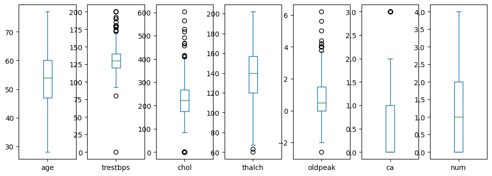
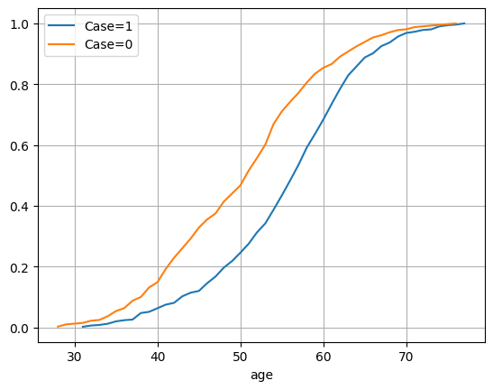

19. Exploratory Analysis on the Heart Disease Dataset#
# This Python 3 environment comes with many helpful analytics libraries installed
# It is defined by the kaggle/python Docker image: https://github.com/kaggle/docker-python
# For example, here's several helpful packages to load
import numpy as np # linear algebra
import pandas as pd # data processing, CSV file I/O (e.g. pd.read_csv)
# Input data files are available in the read-only "../input/" directory
# For example, running this (by clicking run or pressing Shift+Enter) will list all files under the input directory
import os
for dirname, _, filenames in os.walk('/kaggle/input'):
for filename in filenames:
print(os.path.join(dirname, filename))
# You can write up to 20GB to the current directory (/kaggle/working/) that gets preserved as output when you create a version using "Save & Run All"
# You can also write temporary files to /kaggle/temp/, but they won't be saved outside of the current session
import pandas as pd
#Alternatively: download data from https://www.kaggle.com/datasets/redwankarimsony/heart-disease-data
df = pd.read_csv('/kaggle/input/heart-disease-data/heart_disease_uci.csv')
df.head(10)
| id | age | sex | dataset | cp | trestbps | chol | fbs | restecg | thalch | exang | oldpeak | slope | ca | thal | num | |
|---|---|---|---|---|---|---|---|---|---|---|---|---|---|---|---|---|
| 0 | 1 | 63 | Male | Cleveland | typical angina | 145.0 | 233.0 | True | lv hypertrophy | 150.0 | False | 2.3 | downsloping | 0.0 | fixed defect | 0 |
| 1 | 2 | 67 | Male | Cleveland | asymptomatic | 160.0 | 286.0 | False | lv hypertrophy | 108.0 | True | 1.5 | flat | 3.0 | normal | 2 |
| 2 | 3 | 67 | Male | Cleveland | asymptomatic | 120.0 | 229.0 | False | lv hypertrophy | 129.0 | True | 2.6 | flat | 2.0 | reversable defect | 1 |
| 3 | 4 | 37 | Male | Cleveland | non-anginal | 130.0 | 250.0 | False | normal | 187.0 | False | 3.5 | downsloping | 0.0 | normal | 0 |
| 4 | 5 | 41 | Female | Cleveland | atypical angina | 130.0 | 204.0 | False | lv hypertrophy | 172.0 | False | 1.4 | upsloping | 0.0 | normal | 0 |
| 5 | 6 | 56 | Male | Cleveland | atypical angina | 120.0 | 236.0 | False | normal | 178.0 | False | 0.8 | upsloping | 0.0 | normal | 0 |
| 6 | 7 | 62 | Female | Cleveland | asymptomatic | 140.0 | 268.0 | False | lv hypertrophy | 160.0 | False | 3.6 | downsloping | 2.0 | normal | 3 |
| 7 | 8 | 57 | Female | Cleveland | asymptomatic | 120.0 | 354.0 | False | normal | 163.0 | True | 0.6 | upsloping | 0.0 | normal | 0 |
| 8 | 9 | 63 | Male | Cleveland | asymptomatic | 130.0 | 254.0 | False | lv hypertrophy | 147.0 | False | 1.4 | flat | 1.0 | reversable defect | 2 |
| 9 | 10 | 53 | Male | Cleveland | asymptomatic | 140.0 | 203.0 | True | lv hypertrophy | 155.0 | True | 3.1 | downsloping | 0.0 | reversable defect | 1 |
df = df.set_index('id')
df
| age | sex | dataset | cp | trestbps | chol | fbs | restecg | thalch | exang | oldpeak | slope | ca | thal | num | |
|---|---|---|---|---|---|---|---|---|---|---|---|---|---|---|---|
| id | |||||||||||||||
| 1 | 63 | Male | Cleveland | typical angina | 145.0 | 233.0 | True | lv hypertrophy | 150.0 | False | 2.3 | downsloping | 0.0 | fixed defect | 0 |
| 2 | 67 | Male | Cleveland | asymptomatic | 160.0 | 286.0 | False | lv hypertrophy | 108.0 | True | 1.5 | flat | 3.0 | normal | 2 |
| 3 | 67 | Male | Cleveland | asymptomatic | 120.0 | 229.0 | False | lv hypertrophy | 129.0 | True | 2.6 | flat | 2.0 | reversable defect | 1 |
| 4 | 37 | Male | Cleveland | non-anginal | 130.0 | 250.0 | False | normal | 187.0 | False | 3.5 | downsloping | 0.0 | normal | 0 |
| 5 | 41 | Female | Cleveland | atypical angina | 130.0 | 204.0 | False | lv hypertrophy | 172.0 | False | 1.4 | upsloping | 0.0 | normal | 0 |
| ... | ... | ... | ... | ... | ... | ... | ... | ... | ... | ... | ... | ... | ... | ... | ... |
| 916 | 54 | Female | VA Long Beach | asymptomatic | 127.0 | 333.0 | True | st-t abnormality | 154.0 | False | 0.0 | NaN | NaN | NaN | 1 |
| 917 | 62 | Male | VA Long Beach | typical angina | NaN | 139.0 | False | st-t abnormality | NaN | NaN | NaN | NaN | NaN | NaN | 0 |
| 918 | 55 | Male | VA Long Beach | asymptomatic | 122.0 | 223.0 | True | st-t abnormality | 100.0 | False | 0.0 | NaN | NaN | fixed defect | 2 |
| 919 | 58 | Male | VA Long Beach | asymptomatic | NaN | 385.0 | True | lv hypertrophy | NaN | NaN | NaN | NaN | NaN | NaN | 0 |
| 920 | 62 | Male | VA Long Beach | atypical angina | 120.0 | 254.0 | False | lv hypertrophy | 93.0 | True | 0.0 | NaN | NaN | NaN | 1 |
920 rows × 15 columns
df.info()
<class 'pandas.core.frame.DataFrame'>
RangeIndex: 303 entries, 0 to 302
Data columns (total 14 columns):
# Column Non-Null Count Dtype
--- ------ -------------- -----
0 age 303 non-null int64
1 sex 303 non-null int64
2 cp 303 non-null int64
3 trestbps 303 non-null int64
4 chol 303 non-null int64
5 fbs 303 non-null int64
6 restecg 303 non-null int64
7 thalach 303 non-null int64
8 exang 303 non-null int64
9 oldpeak 303 non-null float64
10 slope 303 non-null int64
11 ca 299 non-null float64
12 thal 301 non-null float64
13 num 303 non-null int64
dtypes: float64(3), int64(11)
memory usage: 33.3 KB
19.1. Descriptive Analysis#
Let’s see the statistic summary:
df.describe()
| id | age | trestbps | chol | thalch | oldpeak | ca | num | |
|---|---|---|---|---|---|---|---|---|
| count | 920.000000 | 920.000000 | 861.000000 | 890.000000 | 865.000000 | 858.000000 | 309.000000 | 920.000000 |
| mean | 460.500000 | 53.510870 | 132.132404 | 199.130337 | 137.545665 | 0.878788 | 0.676375 | 0.995652 |
| std | 265.725422 | 9.424685 | 19.066070 | 110.780810 | 25.926276 | 1.091226 | 0.935653 | 1.142693 |
| min | 1.000000 | 28.000000 | 0.000000 | 0.000000 | 60.000000 | -2.600000 | 0.000000 | 0.000000 |
| 25% | 230.750000 | 47.000000 | 120.000000 | 175.000000 | 120.000000 | 0.000000 | 0.000000 | 0.000000 |
| 50% | 460.500000 | 54.000000 | 130.000000 | 223.000000 | 140.000000 | 0.500000 | 0.000000 | 1.000000 |
| 75% | 690.250000 | 60.000000 | 140.000000 | 268.000000 | 157.000000 | 1.500000 | 1.000000 | 2.000000 |
| max | 920.000000 | 77.000000 | 200.000000 | 603.000000 | 202.000000 | 6.200000 | 3.000000 | 4.000000 |
df['dataset'].unique()
array(['Cleveland', 'Hungary', 'Switzerland', 'VA Long Beach'],
dtype=object)
df['slope'].unique()
array(['downsloping', 'flat', 'upsloping', nan], dtype=object)
Let’s visualize all plots in different scales:numeric_columns
from matplotlib import pyplot as plt
#select numeric columns
numeric_columns = df.select_dtypes(include='number').columns #remove first column id
n = len(numeric_columns)
plt.figure(figsize=(12,4))
for i,var in enumerate(numeric_columns):
plt.subplot(1,n,i+1)
df[var].plot.box()

Age looks well distributed. trestbps, chol, thalch, oldpeak have outliers.
import seaborn as sns
sns.pairplot(df.select_dtypes(include='number'))
/opt/conda/lib/python3.10/site-packages/seaborn/axisgrid.py:118: UserWarning: The figure layout has changed to tight
self._figure.tight_layout(*args, **kwargs)
<seaborn.axisgrid.PairGrid at 0x7f263033dc90>
df.select_dtypes(include='number').columns
Index(['age', 'trestbps', 'chol', 'thalch', 'oldpeak', 'ca', 'num'], dtype='object')
columns = ['age', 'trestbps', 'chol', 'thalch', 'oldpeak', 'ca', 'num','sex']
sns.pairplot(df[columns], hue='sex')
/opt/conda/lib/python3.10/site-packages/seaborn/axisgrid.py:118: UserWarning: The figure layout has changed to tight
self._figure.tight_layout(*args, **kwargs)
<seaborn.axisgrid.PairGrid at 0x7f260a140640>
columns = ['age', 'trestbps', 'chol', 'thalch', 'oldpeak', 'ca', 'num']
sns.pairplot(df[columns], hue='num')
/opt/conda/lib/python3.10/site-packages/seaborn/axisgrid.py:118: UserWarning: The figure layout has changed to tight
self._figure.tight_layout(*args, **kwargs)
<seaborn.axisgrid.PairGrid at 0x7f26081bdc60>
columns = ['age', 'trestbps', 'chol', 'thalch', 'oldpeak', 'ca', 'num','dataset']
sns.pairplot(df[columns], hue='dataset')
/opt/conda/lib/python3.10/site-packages/seaborn/axisgrid.py:118: UserWarning: The figure layout has changed to tight
self._figure.tight_layout(*args, **kwargs)
<seaborn.axisgrid.PairGrid at 0x7f260696f490>
df['sex'].value_counts().plot.bar()
<Axes: xlabel='sex'>
19.2. Is the dataset balanced across sites?#
df.groupby('dataset')['age'].plot.hist(alpha=0.5)
plt.legend()
<matplotlib.legend.Legend at 0x7f262028e6e0>
df.boxplot(column='age', by='dataset', grid=False)
<Axes: title={'center': 'age'}, xlabel='dataset'>
df.boxplot(column='num', by='dataset', grid=False)
<Axes: title={'center': 'num'}, xlabel='dataset'>
pd.crosstab(df['sex'],df['dataset'],normalize=1).T.plot.bar(stacked=True)
<Axes: xlabel='dataset'>
The data is not balanced with respect to sex and age across the three sites.
19.3. Is sex a risk factor for heart disease#
pd.crosstab(df['num'],df['sex'], margins=True)
| sex | Female | Male | All |
|---|---|---|---|
| num | |||
| 0 | 144 | 267 | 411 |
| 1 | 30 | 235 | 265 |
| 2 | 10 | 99 | 109 |
| 3 | 8 | 99 | 107 |
| 4 | 2 | 26 | 28 |
| All | 194 | 726 | 920 |
pd.crosstab(df['num'],df['sex'], margins=True, normalize=1)
| sex | Female | Male | All |
|---|---|---|---|
| num | |||
| 0 | 0.742268 | 0.367769 | 0.446739 |
| 1 | 0.154639 | 0.323691 | 0.288043 |
| 2 | 0.051546 | 0.136364 | 0.118478 |
| 3 | 0.041237 | 0.136364 | 0.116304 |
| 4 | 0.010309 | 0.035813 | 0.030435 |
pd.crosstab(df['num'],df['sex'], margins=True, normalize=1).T.plot.bar(stacked=True)
<Axes: xlabel='sex'>
It looks like there is a correlation between the sex and num variables. Let’s measure the Pearson Chi2 statistic:
from scipy.stats import chi2_contingency
chi2_contingency(pd.crosstab(df['num'],df['sex'])).statistic
87.72950473296471
Let’s compare the expected frequencies with the observed ones:
pd.crosstab(df['num'],df['sex'])
| sex | Female | Male |
|---|---|---|
| num | ||
| 0 | 144 | 267 |
| 1 | 30 | 235 |
| 2 | 10 | 99 |
| 3 | 8 | 99 |
| 4 | 2 | 26 |
chi2_contingency(pd.crosstab(df['num'],df['sex'])).expected_freq
array([[ 86.6673913 , 324.3326087 ],
[ 55.88043478, 209.11956522],
[ 22.98478261, 86.01521739],
[ 22.56304348, 84.43695652],
[ 5.90434783, 22.09565217]])
Let’s compute the Cramer V statistic, which is normalized:
from scipy.stats.contingency import association
association(pd.crosstab(df['num'],df['sex']))
0.30880116145902026
Let’s compute the relative risk to have a result which is easier to interpret:
df['case'] = (df['num']>0).astype(int)
df['case'].value_counts().plot.bar()
<Axes: xlabel='case'>
contingency = pd.crosstab(df['case'], df['sex'])
contingency.iloc[[1,0]][['Male','Female']]
| sex | Male | Female |
|---|---|---|
| case | ||
| 1 | 459 | 50 |
| 0 | 267 | 144 |
contingency['Female'][1]
50
from scipy.stats.contingency import relative_risk
relative_risk(contingency['Male'][1],contingency['Male'].sum(),contingency['Female'][1],contingency['Female'].sum()).relative_risk
2.4530578512396697
Let’s compute the odds ratio:
from scipy.stats.contingency import odds_ratio
odds_ratio(contingency.iloc[[1,0]][['Male','Female']])
OddsRatioResult(statistic=4.942016985387771)
19.4. Are there correlations among the numerical variables?#
pd.crosstab(df['num'],df['ca'])
| ca | 0.0 | 1.0 | 2.0 | 3.0 |
|---|---|---|---|---|
| num | ||||
| 0 | 133 | 21 | 8 | 3 |
| 1 | 28 | 20 | 7 | 3 |
| 2 | 9 | 14 | 9 | 4 |
| 3 | 8 | 9 | 15 | 5 |
| 4 | 3 | 3 | 2 | 5 |
sns.heatmap(df.select_dtypes(include='number').drop(['case','num','ca'],axis=1).corr(), annot=True)
<Axes: >
df.plot.scatter(x='age',y='thalch')
<Axes: xlabel='age', ylabel='thalch'>
df.plot.scatter(x='chol',y='thalch')
<Axes: xlabel='chol', ylabel='thalch'>
19.5. Is age is a risk factor?#
df.groupby('case')['age'].plot.density()
plt.legend()
<matplotlib.legend.Legend at 0x7f26080cf5b0>
df_case = df[df['case']==1]
df_nocase = df[df['case']==0]
df_case['age'].value_counts(normalize=True).sort_index().cumsum().plot(label='Case=1')
df_nocase['age'].value_counts(normalize=True).sort_index().cumsum().plot(label='Case=0')
plt.legend()
plt.grid()

pd.cut(df['age'], bins=5)
id
1 (57.4, 67.2]
2 (57.4, 67.2]
3 (57.4, 67.2]
4 (27.951, 37.8]
5 (37.8, 47.6]
...
916 (47.6, 57.4]
917 (57.4, 67.2]
918 (47.6, 57.4]
919 (57.4, 67.2]
920 (57.4, 67.2]
Name: age, Length: 920, dtype: category
Categories (5, interval[float64, right]): [(27.951, 37.8] < (37.8, 47.6] < (47.6, 57.4] < (57.4, 67.2] < (67.2, 77.0]]
pd.crosstab(df['case'], pd.cut(df['age'], bins=5), normalize=1).T.plot.bar(stacked=True)
<Axes: xlabel='age'>
pd.crosstab(df['case'], pd.cut(df['age'], bins=5), normalize=0).plot.bar(stacked=True)
<Axes: xlabel='case'>
pd.crosstab(df['case'], pd.cut(df['age'], bins=2), normalize=0).plot.bar(stacked=True)
<Axes: xlabel='case'>
contingency = pd.crosstab(df['case'], pd.cut(df['age'], bins=2))
odds_ratio(contingency)
OddsRatioResult(statistic=2.766499032279526)
contingency
| age | (27.951, 52.5] | (52.5, 77.0] |
|---|---|---|
| case | ||
| 0 | 229 | 182 |
| 1 | 159 | 350 |